Создание игр в Roblox Studio
Создание анимированных сцен
Знакомство с Moon Animator и анимация персонажа R6
Это занятие - последнее в цикле, посвященном работе с анимацией. В нём нам предстоит поработать с другим видом анимации - сценической анимацией. В предыдущих занятиях мы создавали анимационные клипы - записанные движения для персонажей, использующиеся для кастомизации движений игровых персонажей.
Однако, анимации применяются не только к созданию наборов движений персонажей, но и для создания сцен, в которых происходит сложные события, включающие в себя анимации сразу нескольких объектов, объединённых в один сюжет. Такая анимация применяется в создании мультфильмов, видеороликов, синематиков, катсцен и т.п.
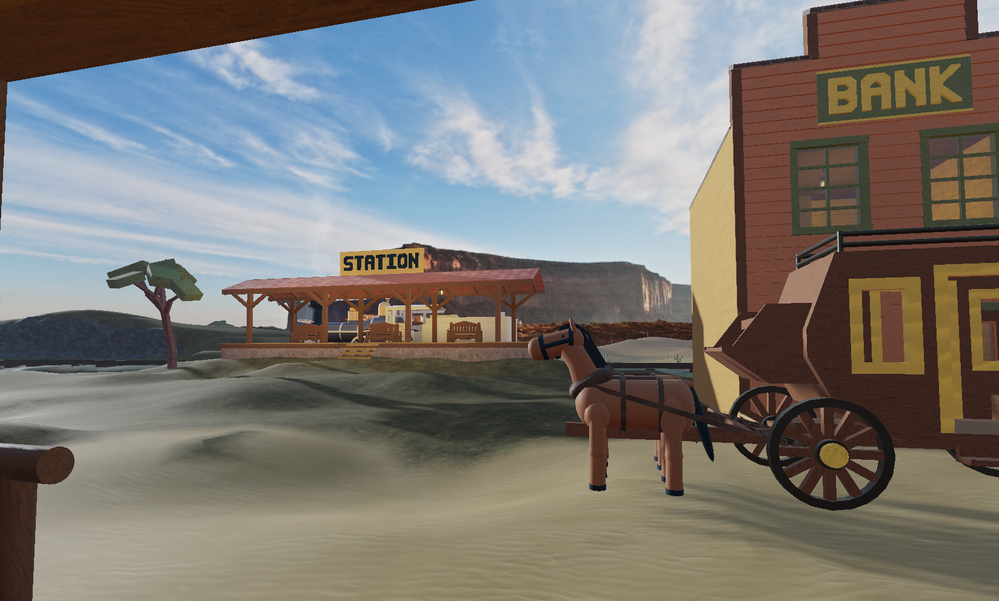В отличие от создания анимационных клипов, при создании анимационной сцены необходимо работать одновременно с несколькими объектами. К сожалению, встроенный плагин Animation Editor не позволяет удобно работать с такого рода сценами, поэтому в этом занятии мы будем использовать сторонний плагин, который называется Moon Animator.
Цели занятия
Для этого занятия создана специальная сцена с декорациями, персонажами и объектами, подготовленными к анимации. Цель этого занятия - создать небольшую анимационную сцену, используя подготовленных персонажей: шерифа, бандита и зомби-ковбоя.
Также во время этого занятия мы научимся анимировать неодушевленные объекты, чтобы сделать окружение более реалистичным и живым.
По сюжету шериф и бандит должны встретиться посреди улицы и начать дуэль. До того, как они начнут стрелять, сверху на них должен упасть зомби ковбой и напугать обоих стрелков. Вы можете придумать свой собственный сюжет и при помощи инструментов, показанных далее, создать его самостоятельно.
Moon Animator
Moon Animator - специальный плагин, созданный для работы со сложными сценами, включающими в себя анимацию неограниченного количества персонажей и объектов. С его помощью можно анимировать практически любой объект Roblox Studio, включая свет, камеры, цвет и материалы объектов и так далее. Рабочий процесс этого плагина приближен к профессиональным приложениям, работающим с анимацией, такими как Autodesk Maya, After Effects, Cinema 4d.
Интерфейс этого плагина в целом похож на интерфейс Animation Editor, с которым мы работали ранее. Чтобы начать работу, сперва необходимо создать новый файл, в котором будут храниться анимационные треки каждого добавленного объекта. Для этого нажмите кнопку "New Moon 2 File" внизу главного экрана.
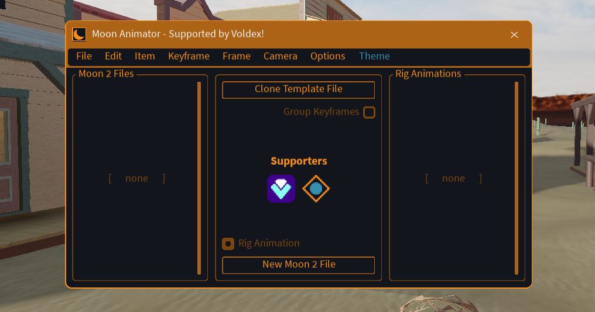Нажмите File --> File Settings и в открывшемся окне введите название анимации MexicanDuel.
Перейдём к добавлению анимированных объектов. Сперва добавим шерифа - для этого перейдите в меню Item и выберите пункт Add. После открытия дополнительного окна кликните на шерифа и добавьте его нажатием на кнопку ОК.
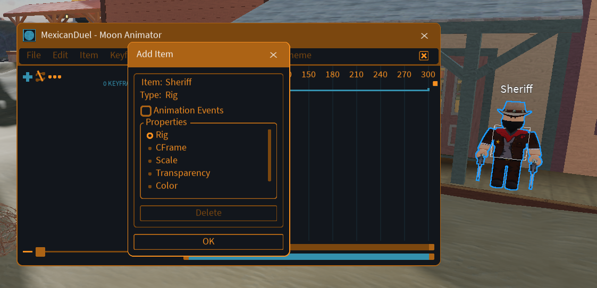В левом поле появились компоненты персонажа, в правом - поля для его ключей. Как и в стандартном аниматоре, каждая часть тела записывается плагином отдельно. Полоса, на которой отображаются ключи анимации, называется "трек".
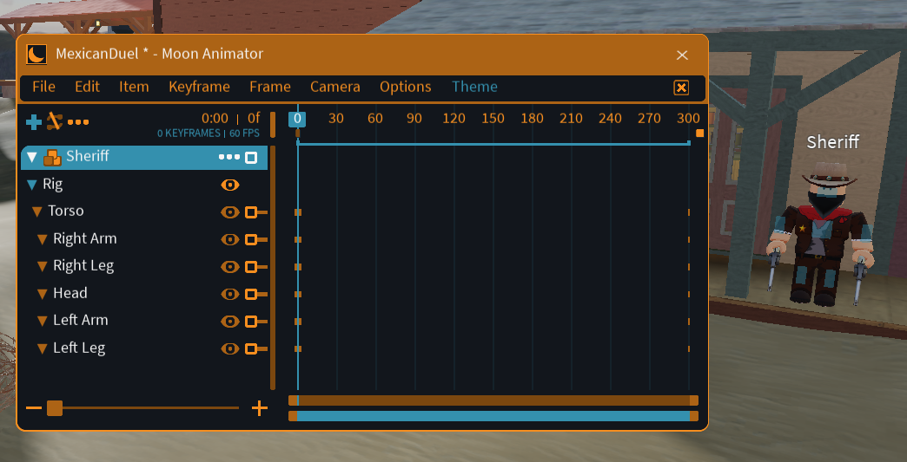Анимация шерифа
Чтобы приступить к анимации, необходимо добавить стартовые ключи. Выберите все части тела персонажа, нажав на главный компонент Rig, после чего нажмите на горячую клавишу G.
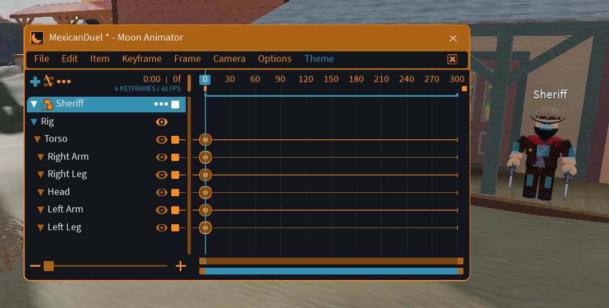Так как в этой сцене мы будем работать с перемещением объектов в пространстве, в первую очередь переместим персонажа из стартовой точки в финальную, где он должен будет остановиться и ожидать бандита. Если вы работаете с ригом R6 и создаете анимацию вручную, можно перемещать персонажа, используя его ключевую кость - Torso.
Выберите трек Torso и переместите слайдер в кадр 120. Используя манипуляторы плагина, переместите персонажа в финальную точку анимации. Чтобы переключить инструмент поворота на инструмент перемещения, используйте горячую клавишу R.
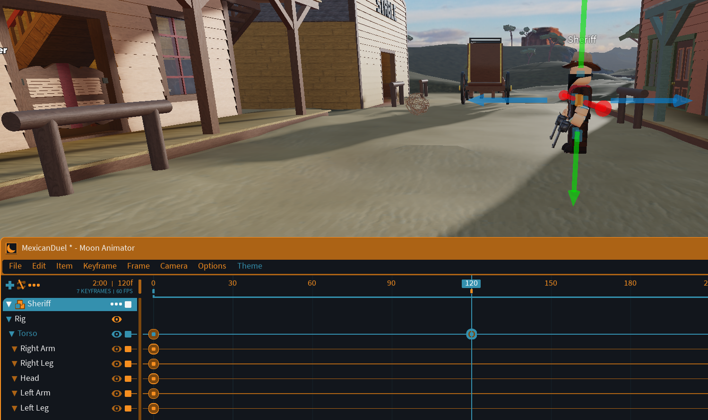Найдите кадр, в котором персонаж перемещается со ступеньки на песок. На несколько кадров ранее перенесите персонажа так, чтобы он стоял на ступеньке, одним кадром позже выровняйте его на земле. Таким образом персонаж будет перемещаться по плоскостям правильно.
Анимация ходьбы
Добавим анимацию ходьбы. Для этого перейдите в кадр схождения со ступеньки и поверните одну из ног вперёд, а другую назад. Передвиньте слайдер дальше, так чтобы персонаж переместился на длину одного шага.
Поверните переднюю ногу назад, а заднюю - вперёд. Передвиньте слайдер в позицию следующего шага и поменяйте ноги местами снова. Повторите эти действия необходимое количество раз, чтобы шериф шагал во время ходьбы.
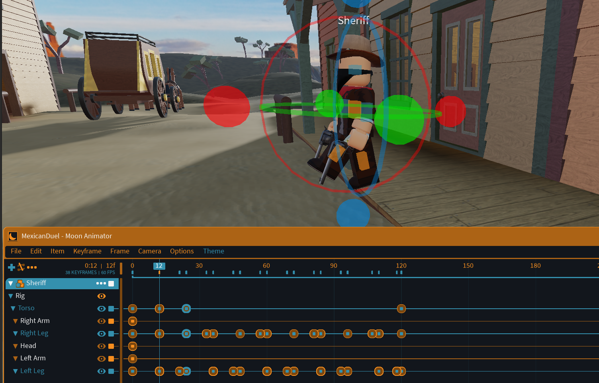Добавьте движение рук. Анимация рук происходит таким же образом, как и анимация ног. Помните, что руки перемещаются в противоположном направлении с ногами, если правая нога перемещается вперёд, то правая рука перемещается назад.
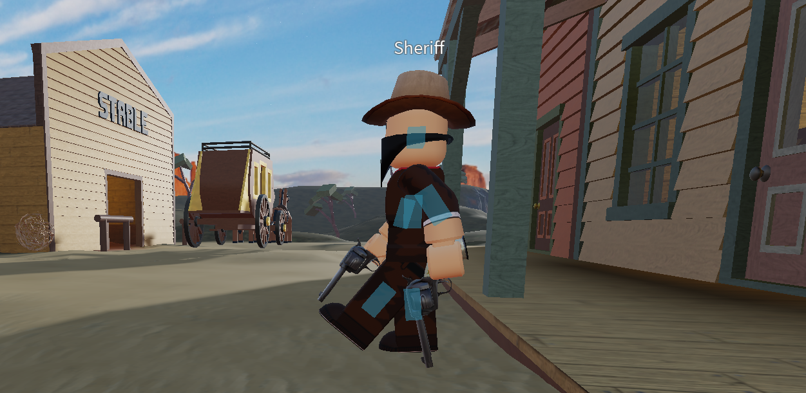Перейдите в финальный кадр и выставьте персонажа в позу ожидания, в которой он будет готовиться к перестрелке с бандитом.
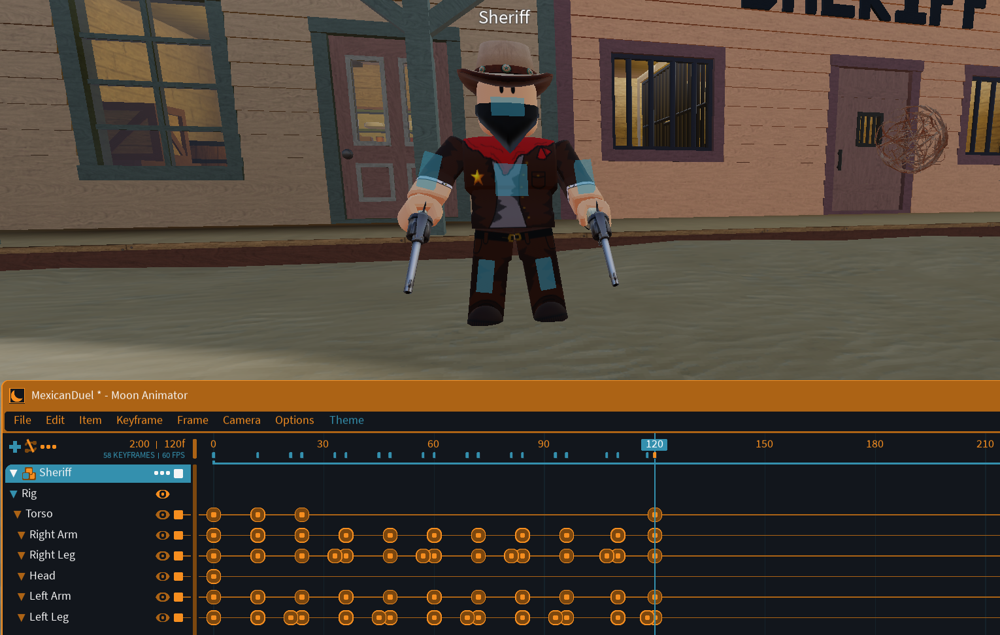Анимация персонажа R15
Использование готовых анимаций
Перейдём к анимации бандита. Добавьте его к рабочим объектам с помощью команды Add в разделе Item, как это было сделано в предыдущем разделе.
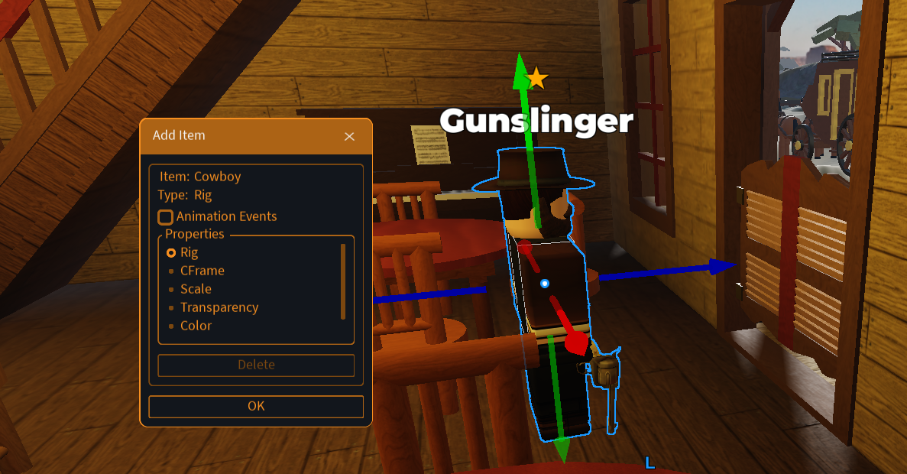Бандит - это персонаж с ригом R15. Анимация этого персонажа вручную займёт намного больше времени и сил, чем анимация предыдущего. Однако, можно использовать и клипы, загруженные нами в Roblox.
Добавим анимацию ходьбы, используя опубликованные в ToolBox анимации. Нажмите File --> Import, в открывшемся окне нажмите кнопку Roblox.
После этого откроется окно ToolBox с вашими анимациями, выберите нужную.
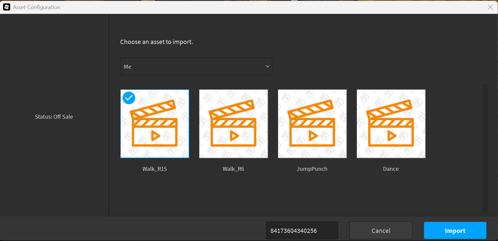Анимация автоматически вставится в рабочую область и теперь, прокручивая слайдер, вы можете увидеть, как она работает. Здесь ключи по умолчанию сгруппированы, поэтому сливаются в одну линию. Если хотите разгруппировать их - выделите все строки анимации с зажатым Shift и нажмите Keyframe --> Ungroup All.
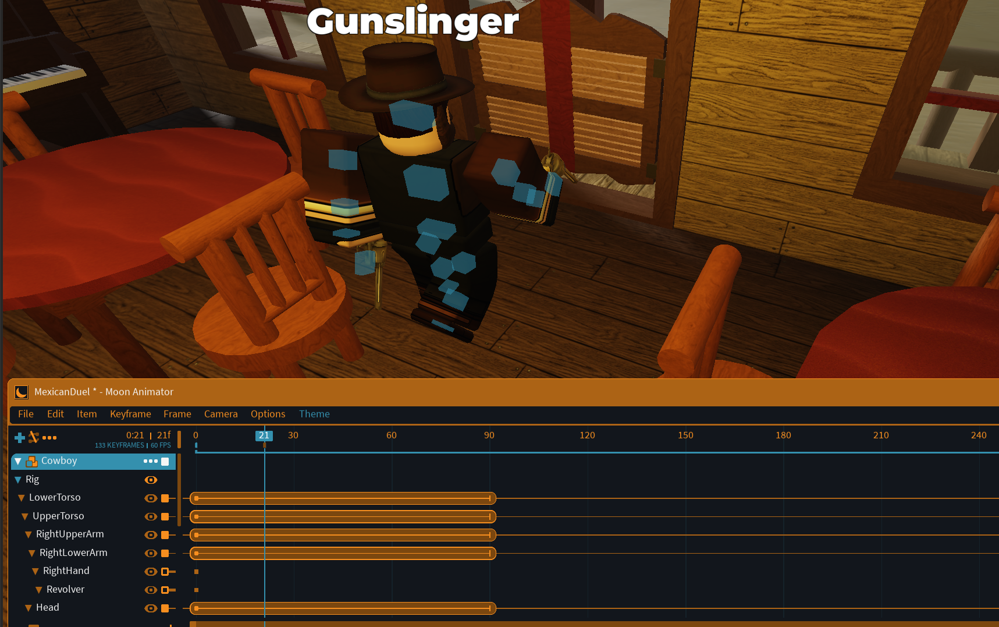Добавим перемещение бандита в пространстве. Ключевая кость (Lower Torso) уже включена в анимацию ходьбы, поэтому мы не можем использовать её для перемещения персонажа в а пространство. Чтобы это исправить, добавим дополнительный трек анимации для персонажа - CFrame.
CFrame - это система хранения трансформаций любого объекта в Roblox Studio, хранящая в себе одновременно его положение, ориентацию и размеры.
Нажмите на три точки рядом с Cowboy и выберите CFrame, после чего нажмите OK:
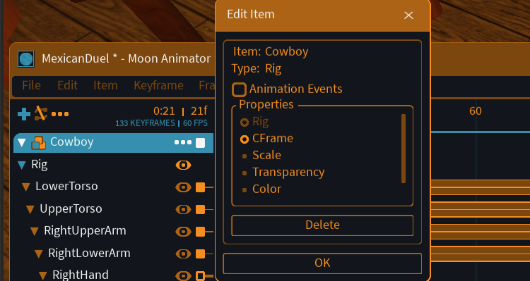При работе с анимацией CFrame мы не можем использовать встроенные манипуляторы плагина, так как CFrame невозможно выбрать кликом по нему - это нематериальный объект. Перейдите в первый кадр и выберите трек CFrame. Нажмите на кнопку G, чтобы активировать трек и добавить стартовый ключ.
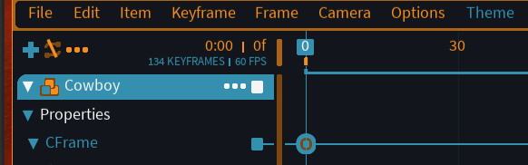Перейдите в 120-й кадр и активируйте стандартный инструмент перемещения Move в Roblox Studio. С его помощью выберите персонажа и переместить его в требуемую финальную точку. В том же кадре нажмите на CFrame и добавьте текущий ключ (можно нажать на "=" на клавиатуре или же просто дважды нажать на CFrame). Также можно добавить промежуточные ключи анимации, чтобы она была более реалистичной.
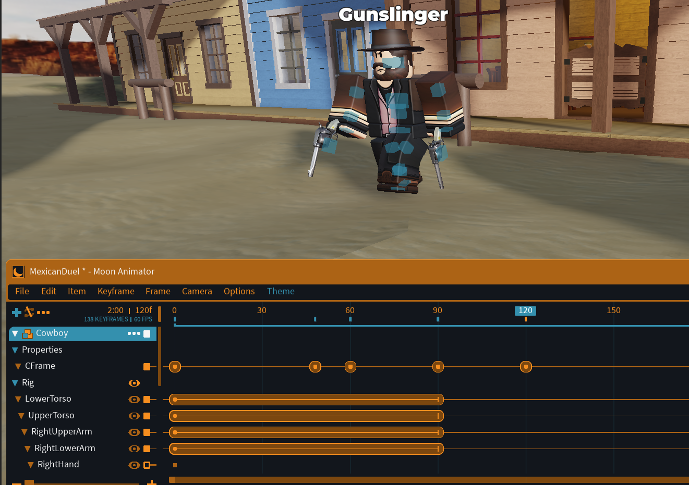Следующее, что нужно сделать - зациклить анимацию ходьбы, чтобы она продолжалась до момента, когда бандит дойдёт до финальной точки. Для этого сперва перейдите в финальный кадр движения бандита и передвиньте слайдер на 10 кадров ранее, чтобы оставить место для перехода от анимации ходьбы в финальную позу.
Найдите точное время этой анимации - оно указано на панели плагина. Это время нужно запомнить.
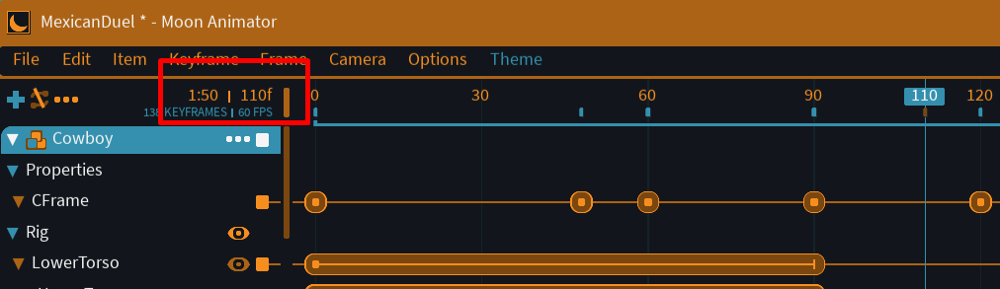Выделите все ключи анимации ходьбы:
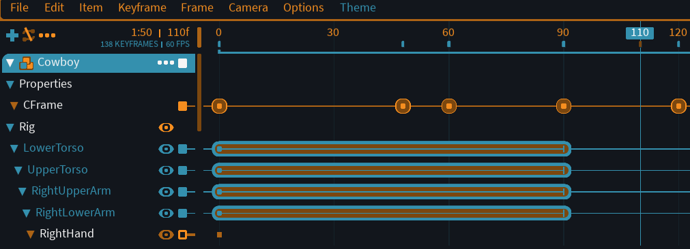Затем нажмите Frame --> Repeat, чтобы продолжить анимацию ходьбы.
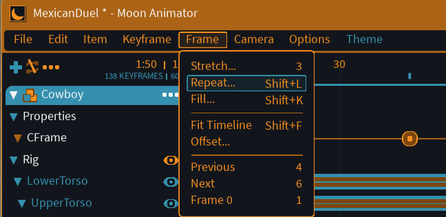В поле End Time введите то время, которое нужно было запомнить несколько шагов назад. Нажмите OK. Анимация автоматически зациклится и повторится до выбранного кадра.
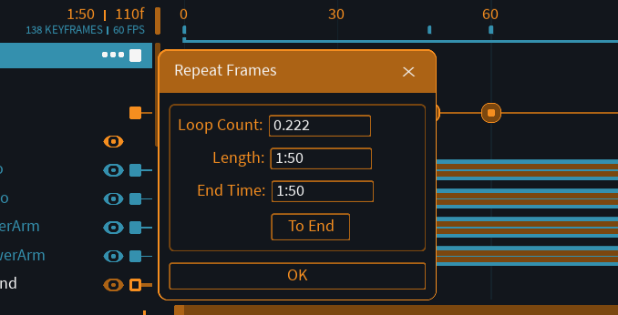Передвиньте слайдер в последний кадр анимации и выставьте персонажа в финальную позу:
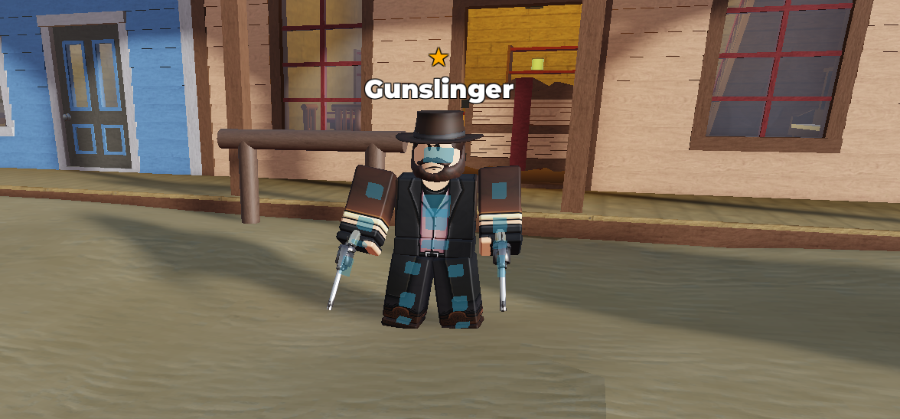Анимация персонажа R15 готова!
Анимация неживых объектов
Анимация дверей бара
Помимо анимации живых объектов, таких как персонажи, животные, монстры и другие существа, во время создания анимационных сцен необходимо анимировать также и объекты окружения, не обладающие ригом. Их анимация в большинстве случаев достаточно проста - все что нужно делать - изменять их положение и повороты при помощи трека CFrame, как мы сделали это с перемещением бандита.
Добавим открытие дверей салуна в момент выхода бандита.
Последовательно выберите и добавьте к объектам анимации обе двери. Для этого снова используйте Item --> Add.

Перейдите в первый кадр и активируйте треки CFrame первой и второй двери нажатием на клавишу G. Переместите слайдер в момент, когда бандит подходит к дверям, но ещё их не касается (на скриншоте это кадр 12). В этом кадре необходимо добавить дополнительные кадры, чтобы двери начали двигаться, начиная именно с этого момента, а не с первого кадра.
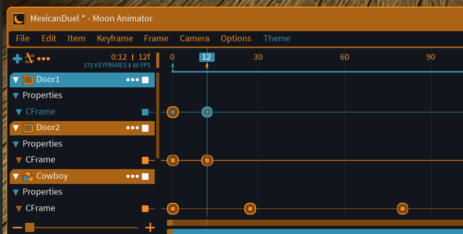Переместите слайдер в момент, когда бандит выходит из дверей. С помощью инструмента поворота выберите сначала одну дверь, разверните её на максимальный угол, потом разверните вторую. Перейдите в Moon Animator, выберите трек первой двери, нажмите на клавишу "=", чтобы добавить ключ, потом - второй трек и повторите действия.
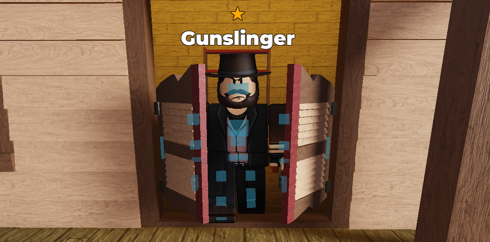Переместите слайдер дальше, в момент, когда бандит полностью выйдет из салуна, и добавьте обратное движение дверей. Двери салунов обычно открываются в обе стороны, поэтому разверните их в обратном направлении внутрь салуна и добавьте ключи.
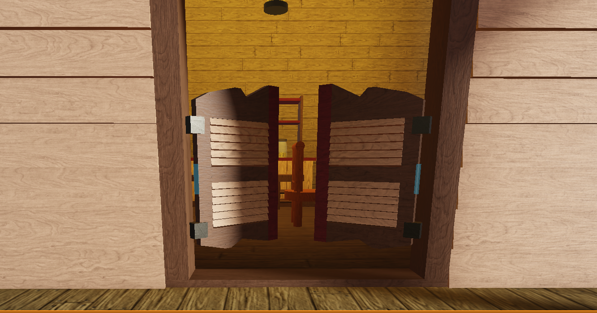Добавьте ещё одно движение дверей вперёд через некоторое время, чтобы создать ощущение инерции, после чего верните дверей в изначальное положение, чтобы они закрылись. Для более органичного вида анимации переместите ключи движений так, чтобы они двигались не одновременно.
Также углы разворота дверей могут не совпадать - одна дверь может открываться дальше, чем другая. Это добавит реалистичности их движениям.
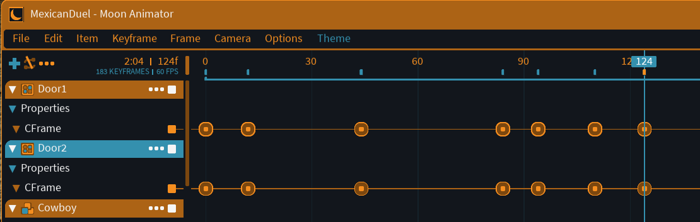Анимация перекати-поля
Добавим последнюю анимацию - перекати-поле, которое должно пролететь между бандитами и шерифом в момент, когда они уже встретились и подготовились к перестрелке.
Выберите перекати-поле и добавьте его к анимируемым объектам. Передвиньте слайдер и добавьте ключ в момент, когда бандит заканчивает свое движение - этот кадр будет началом движения перекати-поля.
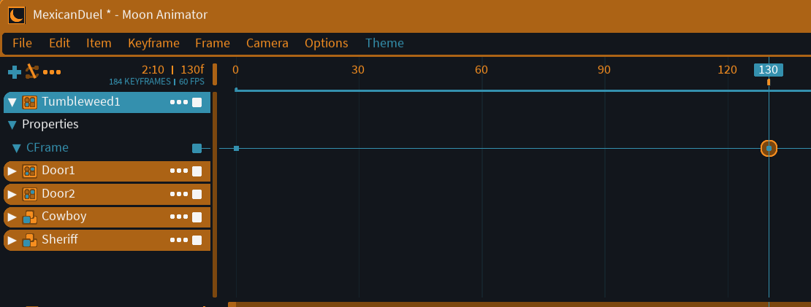Переместите слайдер на некоторое время вперед и, выбрав перекати-поле стандартным инструментом перемещения, переместите его между бандитом и шерифом. Также переместите его наверх, чтобы оно подлетело в воздухе и разверните при помощи инструмента поворота. Добавьте ключ в трек с помощью кнопки «=».
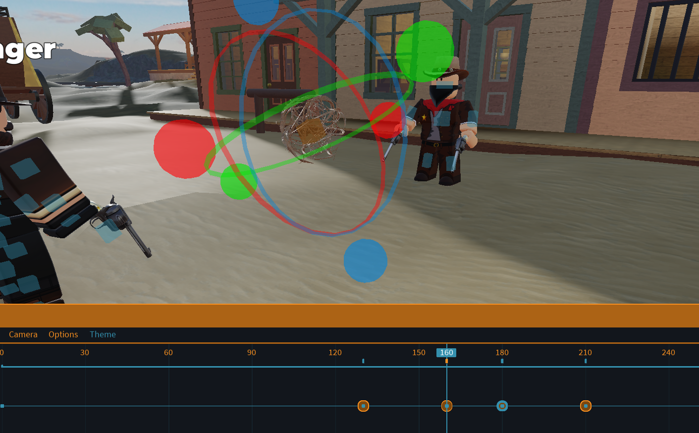Самостоятельно завершите движение перекати-поля так, чтобы оно продолжало крутиться и вылетело из кадра.
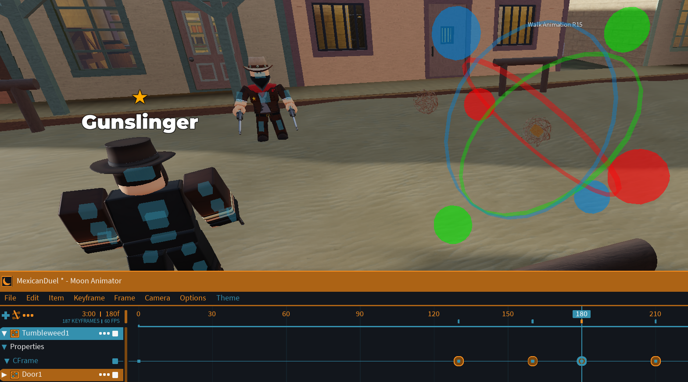Не забудьте сохранить анимацию, нажав File --> Save:
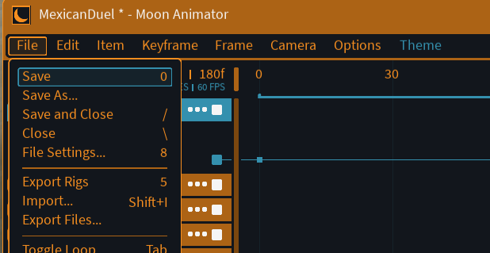На крыше салуна можно заметить третьего персонажа - зомби-ковбоя. Вам необходимо самостоятельно закончить анимацию данной сцены с добавлением зомби-ковбоя и придумать свою концовку.
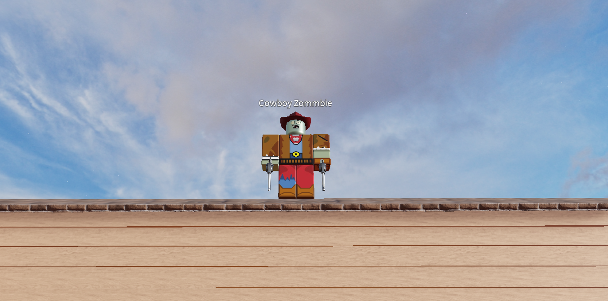Домашкаа 😁
Ура! Это последнее занятие модуля, посвященного анимации. Он был насыщенным практикой. Для повторения изученного нужно ещё раз просмотреть конспекты по анимации и доработать те анимации, которые создавались в текущем модуле.